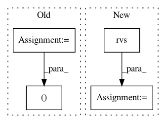

246339ce01898c92ce9e143895c5def9c46dcb78,skopt/gp_opt.py,,gp_minimize,#Any#Any#Any#Any#Any#Any#Any#Any#Any#Any#Any#Any#,26
Before Change
// Bounds
n_params = len(bounds)
lb, ub = extract_bounds(bounds)
// Default GP
if base_estimator is None:
After Change
models.append(gp)
if search == "sampling":
X = space.transform(space.rvs(n_samples=n_points,
random_state=rng))
values = _gaussian_acquisition(
X=X, model=gp, y_opt=np.min(yi), method=acq,
xi=xi, kappa=kappa)
next_x = X[np.argmin(values)]
In pattern: SUPERPATTERN
Frequency: 3
Non-data size: 4
Instances
Project Name: scikit-optimize/scikit-optimize
Commit Name: 246339ce01898c92ce9e143895c5def9c46dcb78
Time: 2016-06-14
Author: g.louppe@gmail.com
File Name: skopt/gp_opt.py
Class Name:
Method Name: gp_minimize
Project Name: pymc-devs/pymc3
Commit Name: a3c20606753726e09799f05721e68101e637df72
Time: 2021-01-19
Author: aloctavodia@gmail.com
File Name: pymc3/distributions/bart.py
Class Name: BaseBART
Method Name: grow_tree
Project Name: scikit-optimize/scikit-optimize
Commit Name: 246339ce01898c92ce9e143895c5def9c46dcb78
Time: 2016-06-14
Author: g.louppe@gmail.com
File Name: skopt/dummy_opt.py
Class Name:
Method Name: dummy_minimize